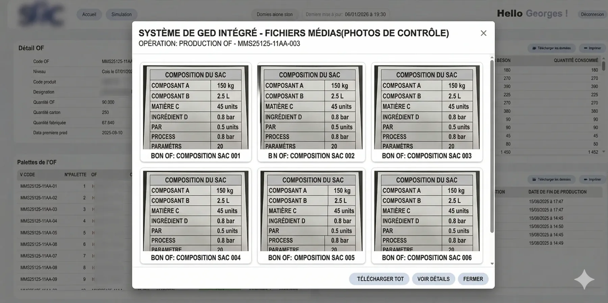
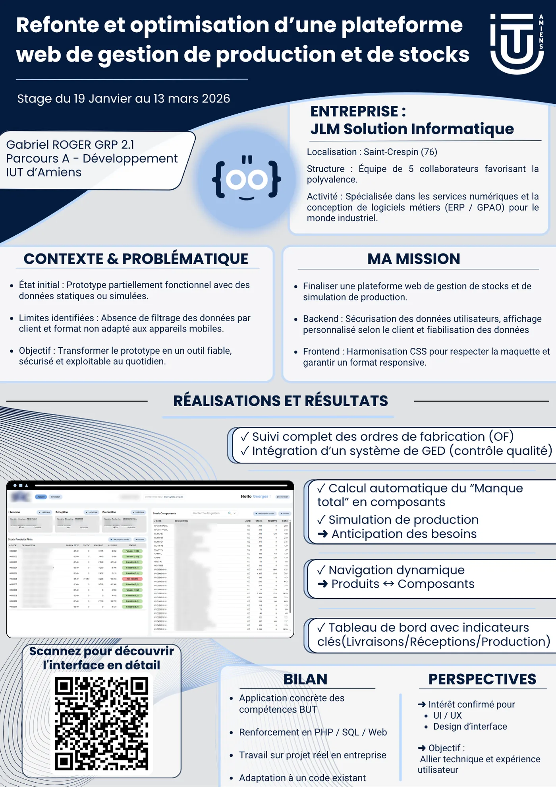

01 Mon Plongeon dans le Monde Industriel
Plongé pour la première fois au cœur d'une véritable entreprise lors de ma 2ème année, chez JLM Solution Informatique, j'ai dû sortir de ma zone de confort scolaire. À mon arrivée, on m'a confié un prototype d'ERP industriel, un squelette de code qui tournait avec des données fictives.
Ma mission était intimidante mais passionnante : prendre ce code "brut", comprendre la logique d'un développeur précédent, et le transformer en un outil robuste que des ouvriers et des chefs d'atelier utiliseraient tous les jours.

02 Refonte UI/UX & Ergonomie
Travailler sur un outil métier impose une contrainte majeure : l'information doit être lisible instantanément par les opérateurs. J'ai d'abord harmonisé le CSS pour respecter strictement la maquette initiale, tout en y apportant une dimension "Mobile First".
J'ai développé des tableaux de bord dynamiques intégrant des indicateurs clés (Livraisons, Réceptions, Production) et repensé la navigation entre les Produits et les Composants. L'intégration d'un "loader" et la refonte des pages de détails des Ordres de Fabrication (OF) ont considérablement amélioré l'expérience utilisateur.
03 Logique Métier & Backend
Au-delà de l'interface, le cœur de ma mission résidait dans le traitement des données en PHP/SQL. L'enjeu était de rendre l'application dynamique et de la relier de manière fiable à la base de données de l'entreprise.
J'ai notamment dû concevoir et optimiser des requêtes SQL complexes pour récupérer précisément les informations de stock, croiser les données, et permettre au système de calculer automatiquement le "Manque total" en composants pour une production donnée.
04 Les Réalisations Clés

Suivi des Ordres de Fabrication
Création d'interfaces détaillées pour visualiser l'état d'avancement des OF et les palettes produites, avec un affichage clair des quantités et des statuts.

Simulation & Calcul des Manques
Développement d'un module de simulation permettant d'anticiper les besoins en composants en fonction des stocks réels.

Système de GED Intégré
Implémentation d'une gestion documentaire liée à la base de données permettant d'afficher et d'associer des fichiers médias (comme des photos de contrôle qualité) directement aux Ordres de Fabrication.

Affichage Autonome (Kiosque)
Second projet : Configuration d'un Raspberry Pi en "mode kiosque" pour diffuser des informations de manière autonome dans les ateliers. Le Raspberry Pi récupère les configurations directement depuis la base de données.
05 Prise de Recul et Compétences Acquises
La plus grande difficulté n'a pas été technique, mais organisationnelle : comment reprendre le code de quelqu'un d'autre sans tout casser ? J'ai appris à lire, analyser et documenter avant de coder. Cette immersion m'a fait grandir en autonomie. J'ai aussi dû faire preuve de logique pour repenser l'ergonomie totale de l'outil.
Sur l'extranet, il n'y avait pas de maquette : personne n'avait dessiné ces écrans avant nous. L'emplacement des tableaux, ce qui devait se lire d'un coup d'œil, ce qui pouvait attendre un clic : on a tranché à deux avec mon tuteur, au fil de l'avancement. Une visioconférence avec le client a ensuite permis de faire le tri entre ce qu'il voulait et ce qui était réalisable. Personne n'a testé l'outil avant la fin du stage. C'est la limite que je retiens de ces huit semaines, et la raison pour laquelle je veux apprendre à concevoir avec des utilisateurs, plutôt que pour eux.
De retour à l'IUT, il fallait restituer ces huit semaines sur une affiche unique : contexte, mission, réalisations et bilan, lisibles à deux mètres. L'exercice force à trancher : sur trois mois de travail, qu'est-ce qui mérite d'être vu en premier ?

Compétences validées
- Répondre aux besoins (Gérer des données) : Création de requêtes SQL complexes pour croiser les stocks disponibles et calculer les manques de production.
- Conduire (Piloter un projet) : Adaptation aux méthodes de l'entreprise, respect des délais d'un cahier des charges professionnel et prise d'initiative sur le design.
- Communiquer : Échanges constants avec mon tuteur pour valider mes choix techniques et fonctionnels.